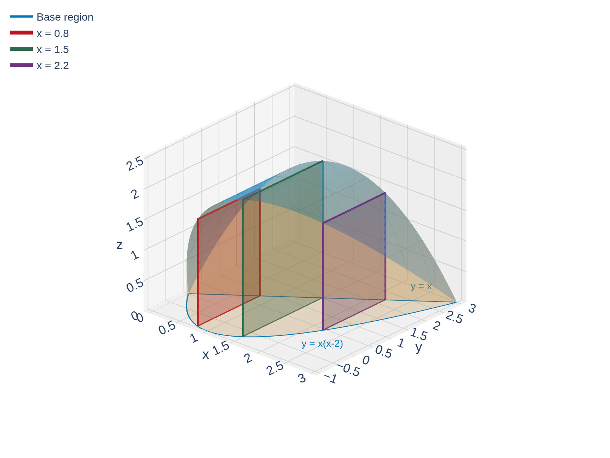
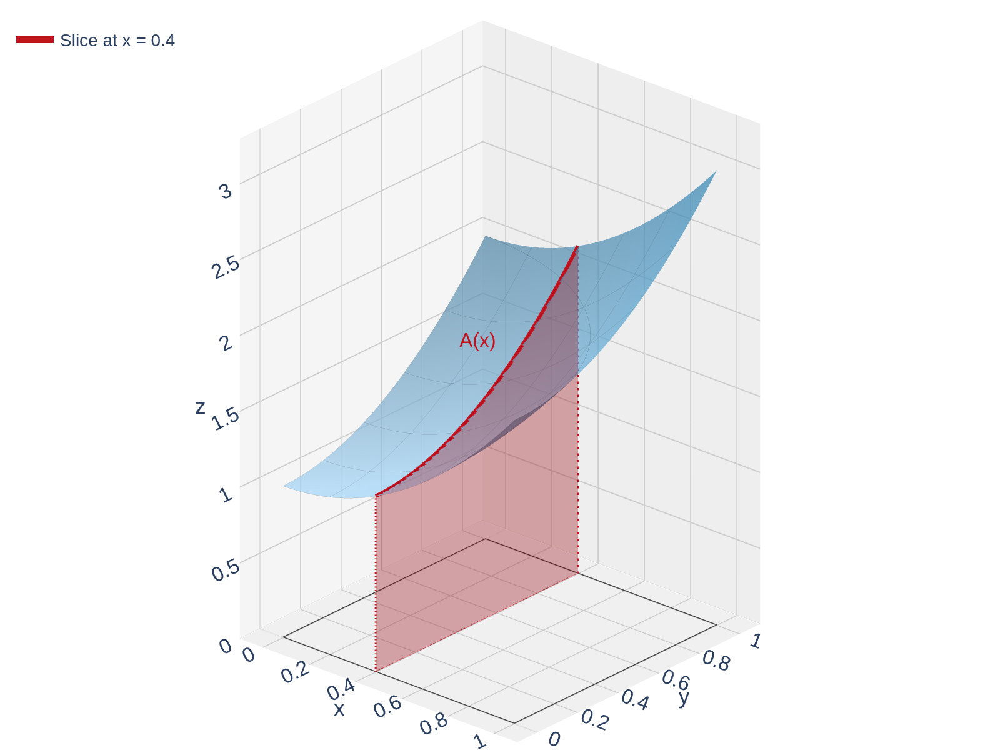

From Cross-Sections to Iterated Integrals
In Calc I you computed volumes by integrating cross-sectional areas:
\[V = \int_a^b A(x)\,dx\]
The key was knowing the shape of each cross-section. Let's revisit this idea with a concrete example.
A solid \(S\) has its base in the \(xy\)-plane, bounded by \(f(x) = x(x-2)\) and \(g(x) = x\). Cross-sections perpendicular to the \(x\)-axis are squares. Find the volume.

Find where the curves intersect, then compute the side length of each square cross-section as \(g(x) - f(x)\).
Find intersections: \(x(x-2) = x\) \(\Rightarrow\) \(x^2 - 3x = 0\) \(\Rightarrow\) \(x = 0\) or \(x = 3\).
Side length: \(s(x) = g(x) - f(x) = x - x(x-2) = x - x^2 + 2x = 3x - x^2\)
Cross-sectional area: \(A(x) = s(x)^2 = (3x - x^2)^2\)
Volume:
\[V = \int_0^3 (3x - x^2)^2\,dx = \int_0^3 (9x^2 - 6x^3 + x^4)\,dx\]
\[= \left[3x^3 - \frac{3x^4}{2} + \frac{x^5}{5}\right]_0^3 = 81 - \frac{243}{2} + \frac{243}{5} = \frac{81}{10}\]
Volume = \(\int\) (cross-sectional area). This is the same idea we'll use for double integrals — but instead of knowing the cross-section's shape, we'll compute it by integrating in the other variable.
The Cross-Section Idea for Surfaces
Now instead of a solid with known cross-sections, suppose we want the volume under a surface \(z = f(x,y)\) over a rectangle \(R = [a,b] \times [c,d]\).
Fix a value of \(x\). Slicing the surface at that \(x\) gives a curve \(z = f(x,y)\) in the \(yz\)-plane. The area under that curve is:
\[A(x) = \int_c^d f(x,y)\,dy\]
![A 3D plot of the surface f(x,y) = 1 plus x squared plus y squared over the unit square [0,1] by [0,1]. A vertical red cross-section at x = 0.4 is highlighted, filling from z = 0 up to the surface to represent the cross-sectional area A(x). The slice is labeled A(x), illustrating the idea of integrating in y first to obtain A(x), then integrating A(x) in x for the total volume.](figures/iterated_integral_slicing.png "Click to interact")
Then the total volume is:
\[V = \int_a^b A(x)\,dx = \int_a^b \left[\int_c^d f(x,y)\,dy\right]dx\]
This is an iterated integral: we integrate in \(y\) first (treating \(x\) as a constant), then integrate the result in \(x\).
We write this more compactly as:
\[\int_a^b \int_c^d f(x,y)\,dy\,dx\]
The inner integral is computed first, then the outer integral.
An iterated integral is just two single-variable integrals done one at a time. The inner integral produces a function of the outer variable, and then we integrate that.
Example: Volume Under \(f(x,y) = 1 + x^2 + y^2\)
Find the volume under \(f(x,y) = 1 + x^2 + y^2\) above the unit square \(R = [0,1] \times [0,1]\).

Fix \(x\) and integrate in \(y\) first to get \(A(x)\). Then integrate \(A(x)\) from \(0\) to \(1\).
Step 1: Inner integral (integrate in \(y\), treat \(x\) as constant):
\[A(x) = \int_0^1 (1 + x^2 + y^2)\,dy = \left[y + x^2 y + \frac{y^3}{3}\right]_0^1 = 1 + x^2 + \frac{1}{3} = \frac{4}{3} + x^2\]
Step 2: Outer integral (integrate \(A(x)\) in \(x\)):
\[V = \int_0^1 \left(\frac{4}{3} + x^2\right)\,dx = \left[\frac{4}{3}x + \frac{x^3}{3}\right]_0^1 = \frac{4}{3} + \frac{1}{3} = \frac{5}{3}\]
The volume under \(f(x,y) = 1 + x^2 + y^2\) over the unit square is \(\dfrac{5}{3}\).
Fubini's Theorem
Does the order of integration matter? Can we integrate in \(x\) first, then \(y\)?
If \(f\) is continuous on the rectangle \(R = [a,b] \times [c,d]\), then
\[\iint_R f(x,y)\,dA = \int_a^b \int_c^d f(x,y)\,dy\,dx = \int_c^d \int_a^b f(x,y)\,dx\,dy\]
Both orders of integration give the same answer.
Let's verify with our previous example. Integrate in \(x\) first:
\[\int_0^1 \int_0^1 (1 + x^2 + y^2)\,dx\,dy = \int_0^1 \left[x + \frac{x^3}{3} + y^2 x\right]_0^1 dy = \int_0^1 \left(\frac{4}{3} + y^2\right)dy = \frac{4}{3} + \frac{1}{3} = \frac{5}{3} \;\checkmark\]
Fubini's Theorem says we can choose whichever order is more convenient. Sometimes one order is much easier than the other!
Quick Check: Set Up an Iterated Integral
Suppose \(R = [0,2] \times [1,3]\).
Write \(\displaystyle\iint_R xy\,dA\) as an iterated integral in both orders. Then evaluate one of them.
Identify \(a\), \(b\), \(c\), \(d\) from \(R\). Then write the integral both ways: \(dy\,dx\) and \(dx\,dy\).
Order 1 (\(dy\,dx\)): \(\displaystyle\int_0^2 \int_1^3 xy\,dy\,dx\)
Order 2 (\(dx\,dy\)): \(\displaystyle\int_1^3 \int_0^2 xy\,dx\,dy\)
Evaluate Order 1:
\[\int_0^2 \int_1^3 xy\,dy\,dx = \int_0^2 \left[\frac{xy^2}{2}\right]_1^3 dx = \int_0^2 \frac{x(9 - 1)}{2}\,dx = \int_0^2 4x\,dx = \left[2x^2\right]_0^2 = 8\]
On rectangles, setting up iterated integrals is mechanical: the limits are just the edges of the rectangle. The real skill is choosing the order that makes the inner integral simplest.
Example: A Trig Integral
Evaluate \(\displaystyle\iint_R \cos(x + 2y)\,dA\), where \(R = [0, \pi] \times [0, \pi/2]\).
Integrate in \(y\) first using substitution \(u = x + 2y\).
Inner integral (in \(y\), with \(x\) fixed):
\[\int_0^{\pi/2} \cos(x + 2y)\,dy\]
Let \(u = x + 2y\), so \(du = 2\,dy\). When \(y = 0\): \(u = x\). When \(y = \pi/2\): \(u = x + \pi\).
\[= \frac{1}{2}\int_x^{x+\pi} \cos u\,du = \frac{1}{2}[\sin u]_x^{x+\pi} = \frac{1}{2}\big[\sin(x + \pi) - \sin x\big]\]
Since \(\sin(x + \pi) = -\sin x\):
\[= \frac{1}{2}(-\sin x - \sin x) = -\sin x\]
Outer integral:
\[\int_0^{\pi} (-\sin x)\,dx = [\cos x]_0^{\pi} = \cos\pi - \cos 0 = -1 - 1 = -2\]
\(\displaystyle\iint_R \cos(x + 2y)\,dA = -2\).
Beyond Rectangles: General Regions
So far we've integrated over rectangles \([a,b] \times [c,d]\), where the limits of integration are all constants.
But most real-world regions aren't rectangles!

What changes? When the region is not a rectangle, the limits of the inner integral depend on the outer variable.
- On a rectangle: \(\displaystyle\int_a^b \int_c^d f(x,y)\,dy\,dx\) — all limits are constants
- On a general region: \(\displaystyle\int_a^b \int_{g_1(x)}^{g_2(x)} f(x,y)\,dy\,dx\) — inner limits are functions
To set up these integrals correctly, we need to describe the region in a systematic way. That's where Type 1 and Type 2 regions come in.
The outer limits are always constants (numbers). The inner limits can be functions of the outer variable. Getting these limits right is the central skill of this section.
Type 1 and Type 2 Regions
A region \(D\) is Type 1 if it lies between two curves \(y = g_1(x)\) and \(y = g_2(x)\):
\[D = \{(x,y) \mid a \leq x \leq b, \;\; g_1(x) \leq y \leq g_2(x)\}\]
\[\iint_D f(x,y)\,dA = \int_a^b \int_{g_1(x)}^{g_2(x)} f(x,y)\,dy\,dx\]
A region \(D\) is Type 2 if it lies between two curves \(x = h_1(y)\) and \(x = h_2(y)\):
\[D = \{(x,y) \mid c \leq y \leq d, \;\; h_1(y) \leq x \leq h_2(y)\}\]
\[\iint_D f(x,y)\,dA = \int_c^d \int_{h_1(y)}^{h_2(y)} f(x,y)\,dx\,dy\]

Type 1: Outer variable is \(x\), inner limits are functions of \(x\). Integrate \(dy\) first.
Type 2: Outer variable is \(y\), inner limits are functions of \(y\). Integrate \(dx\) first.
Many regions are both types — you get to choose!
Quick Check: Identify the Limits
Consider the triangular region with vertices \((0,0)\), \((1,0)\), and \((0,1)\).
Describe this region as both Type 1 and Type 2, and write the limits of integration for each.
Find the equation of the hypotenuse. Then for Type 1 ask: for fixed \(x\), where does \(y\) start and stop? For Type 2 ask: for fixed \(y\), where does \(x\) start and stop?
The hypotenuse connects \((1,0)\) to \((0,1)\): the equation is \(y = 1 - x\) (equivalently, \(x = 1 - y\)).
Type 1 (\(dy\,dx\)): For a fixed \(x \in [0,1]\), \(y\) goes from \(0\) up to \(1 - x\):
\[\int_0^1 \int_0^{1-x} f(x,y)\,dy\,dx\]
Type 2 (\(dx\,dy\)): For a fixed \(y \in [0,1]\), \(x\) goes from \(0\) to \(1 - y\):
\[\int_0^1 \int_0^{1-y} f(x,y)\,dx\,dy\]
Always think: “For a fixed value of the outer variable, where does the inner variable start and stop?” Sketch the region and draw a vertical line (Type 1) or horizontal line (Type 2) to read off the limits.
Example: Integral over a Triangular Region
Evaluate \(\displaystyle\iint_D x\sqrt{y^2 - x^2}\,dA\), where \(D = \{(x,y) \mid 0 \leq y \leq 1,\; 0 \leq x \leq y\}\).

This is a Type 2 region: for fixed \(y\), \(x\) goes from \(0\) to \(y\). Set up the integral as \(dx\,dy\).
Set up the iterated integral (Type 2, integrate in \(x\) first):
\[\int_0^1 \int_0^y x\sqrt{y^2 - x^2}\,dx\,dy\]
Inner integral (in \(x\), with \(y\) fixed): Let \(u = y^2 - x^2\), so \(du = -2x\,dx\).
When \(x = 0\): \(u = y^2\). When \(x = y\): \(u = 0\).
\[\int_0^y x\sqrt{y^2 - x^2}\,dx = -\frac{1}{2}\int_{y^2}^0 u^{1/2}\,du = \frac{1}{2}\int_0^{y^2} u^{1/2}\,du = \frac{1}{2} \cdot \frac{2}{3} u^{3/2}\Big|_0^{y^2} = \frac{1}{3}(y^2)^{3/2} = \frac{y^3}{3}\]
Outer integral:
\[\int_0^1 \frac{y^3}{3}\,dy = \frac{1}{3} \cdot \frac{y^4}{4}\Big|_0^1 = \frac{1}{12}\]
\(\displaystyle\iint_D x\sqrt{y^2 - x^2}\,dA = \dfrac{1}{12}\).
Think about it: What would happen if we tried this as a Type 1 integral (\(dy\,dx\))?
The inner integral would be \(\int_x^1 x\sqrt{y^2 - x^2}\,dy\) — integrating \(\sqrt{y^2 - x^2}\) with respect to \(y\), which requires trig substitution and is much harder. Choosing the right order matters!
Describing a Region Both Ways
Consider the region \(D\) between \(y = x^2\) and \(y = \sqrt{x}\).
(a) Describe \(D\) as both a Type 1 and a Type 2 region.
(b) Evaluate \(\displaystyle\iint_D (2x - 3y^2)\,dA\).
First, find the intersections: \(x^2 = \sqrt{x}\) \(\Rightarrow\) \(x^4 = x\) \(\Rightarrow\) \(x(x^3 - 1) = 0\) \(\Rightarrow\) \(x = 0\) or \(x = 1\).

Sketch the region. For Type 1: fix \(x\), find \(y\)-bounds. For Type 2: fix \(y\), find \(x\)-bounds. Then choose the easier order to integrate.
Type 1 (\(dy\,dx\)): For \(x \in [0,1]\), \(y\) goes from \(x^2\) (lower) up to \(\sqrt{x}\) (upper):
\[D = \{(x,y) \mid 0 \leq x \leq 1,\; x^2 \leq y \leq \sqrt{x}\}\]
\[\iint_D (2x - 3y^2)\,dA = \int_0^1 \int_{x^2}^{\sqrt{x}} (2x - 3y^2)\,dy\,dx\]
Type 2 (\(dx\,dy\)): For \(y \in [0,1]\), \(x\) goes from \(y^2\) (left curve: \(x = y^2\)) to \(\sqrt{y}\) (right curve: \(x = \sqrt{y}\)):
\[D = \{(x,y) \mid 0 \leq y \leq 1,\; y^2 \leq x \leq \sqrt{y}\}\]
Describing a Region Both Ways
Part (b): Let's use the Type 1 description.
Inner integral (in \(y\)):
\[\int_{x^2}^{\sqrt{x}} (2x - 3y^2)\,dy = \left[2xy - y^3\right]_{x^2}^{\sqrt{x}}\]
Evaluate at the bounds:
At \(y = \sqrt{x}\): \(\;2x \cdot \sqrt{x} - (\sqrt{x})^3 = 2x^{3/2} - x^{3/2} = x^{3/2}\)
At \(y = x^2\): \(\;2x \cdot x^2 - (x^2)^3 = 2x^3 - x^6\)
Subtract:
\[\int_{x^2}^{\sqrt{x}} (2x - 3y^2)\,dy = x^{3/2} - 2x^3 + x^6\]
Outer integral:
\[\int_0^1 \left(x^{3/2} - 2x^3 + x^6\right)dx = \left[\frac{2}{5}x^{5/2} - \frac{x^4}{2} + \frac{x^7}{7}\right]_0^1 = \frac{2}{5} - \frac{1}{2} + \frac{1}{7}\]
\[= \frac{28 - 35 + 10}{70} = \frac{3}{70}\]
\(\displaystyle\iint_D (2x - 3y^2)\,dA = \dfrac{3}{70}\).
Changing the Order of Integration
Sometimes you must change the order of integration because the inner integral is impossible to evaluate directly.
Strategy:
- Sketch the region described by the original limits
- Re-describe it using the other type
- Write the integral with the new limits
Evaluate \(\displaystyle\int_0^1 \int_x^1 e^{y^2}\,dy\,dx\).
We can't integrate \(e^{y^2}\) in \(y\) — there's no elementary antiderivative! Sketch the region, then swap the order.
Original region: \(0 \leq x \leq 1\), \(x \leq y \leq 1\).
This is the triangle above \(y = x\) and below \(y = 1\), for \(0 \leq x \leq 1\).
Reverse the description (Type 2): For fixed \(y \in [0,1]\), \(x\) goes from \(0\) to \(y\):
\[\int_0^1 \int_0^y e^{y^2}\,dx\,dy\]
Inner integral: \(\displaystyle\int_0^y e^{y^2}\,dx = y\,e^{y^2}\) (since \(e^{y^2}\) is constant in \(x\)!)
Outer integral: Let \(u = y^2\), \(du = 2y\,dy\):
\[\int_0^1 y\,e^{y^2}\,dy = \frac{1}{2}e^{y^2}\Big|_0^1 = \frac{1}{2}(e - 1)\]
When you can't evaluate the inner integral, try reversing the order. The integral \(\int e^{y^2}\,dy\) has no closed form, but \(\int y\,e^{y^2}\,dy\) does!
Section 15.2 Summary
Evaluate double integrals by doing two single-variable integrals, one at a time. Inner integral first, then outer.
For continuous \(f\) on a rectangle: \(\int\int f\,dy\,dx = \int\int f\,dx\,dy\). Both orders give the same answer.
\(a \leq x \leq b\), \(g_1(x) \leq y \leq g_2(x)\). Integrate \(dy\,dx\). Inner limits are functions of \(x\).
\(c \leq y \leq d\), \(h_1(y) \leq x \leq h_2(y)\). Integrate \(dx\,dy\). Inner limits are functions of \(y\).
Sketch the region, re-describe with the other variable as outer. Essential when one order leads to an impossible integral.
The big skill: Given a region, describe it with the right limits. Sketch first, then ask “for a fixed value of the outer variable, where does the inner variable go?”
Homework
Section 15.2
3, 5, 7, 9, 11, 15, 16, 17, 19, 23, 25, 27, 31, 33, 35, 37, 43, 55, 57, 59, 61, 63, 65, 75, 77